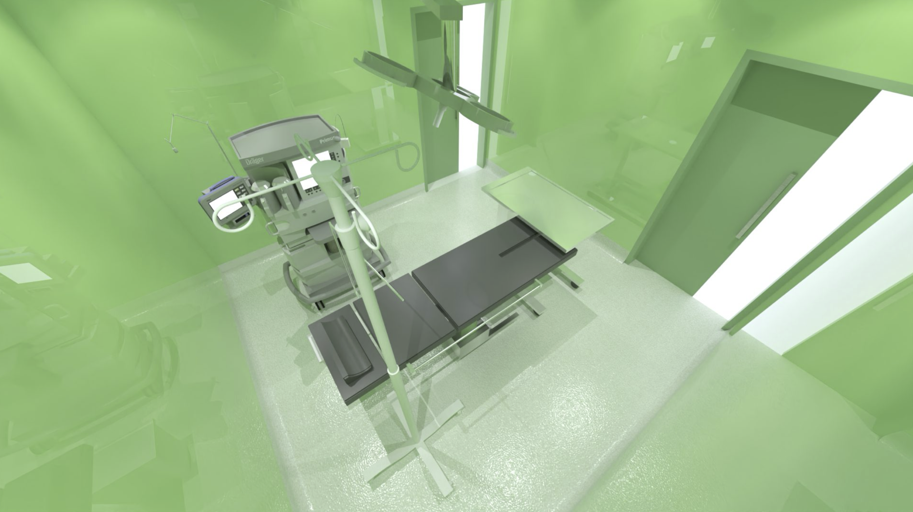

Keamanan, Keakuratan, dan Sterilitas Maksimal untuk Setiap Prosedur Bedah.

Didukung peralatan bedah minimal dan sistem monitoring canggih untuk hasil yang optimal dan pemulihan cepat.
Menggunakan sistem tekanan positif (Positive Pressure System) untuk menjamin sterilitas udara kelas tertinggi, mencegah risiko infeksi pasca-operasi.
Tim ahli bedah, anestesiologi, dan perawat terlatih yang berkolaborasi dalam berbagai jenis operasi, mulai dari bedah umum hingga sub-spesialis.
Butuh Informasi lebih lanjut mengenai prosedur bedah?
Hubungi Kami